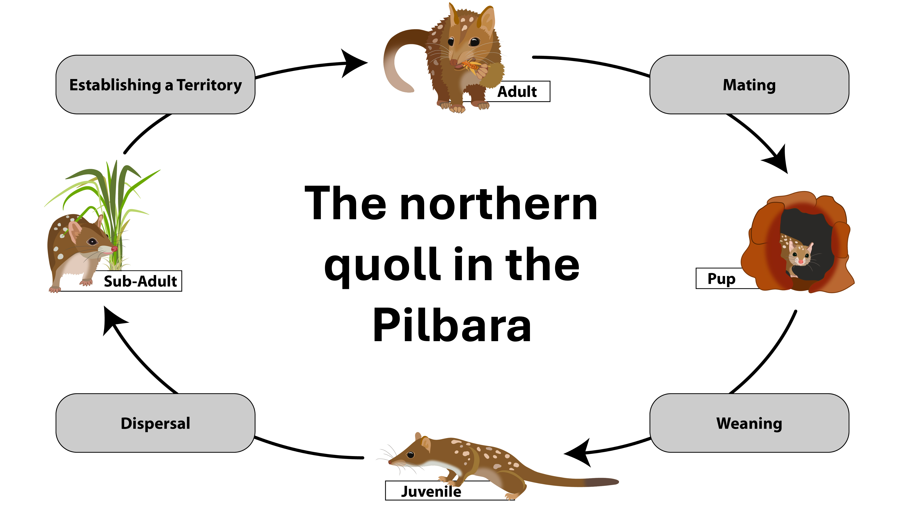
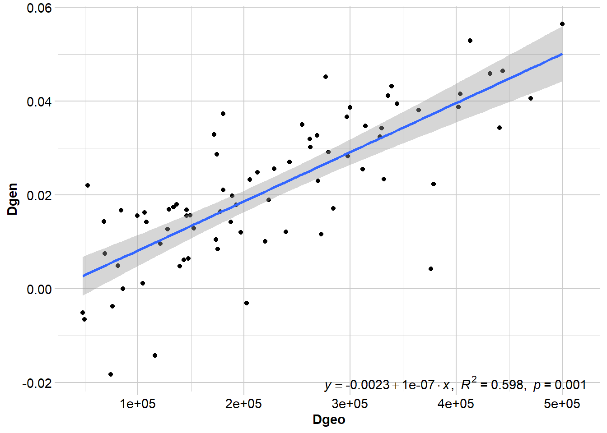
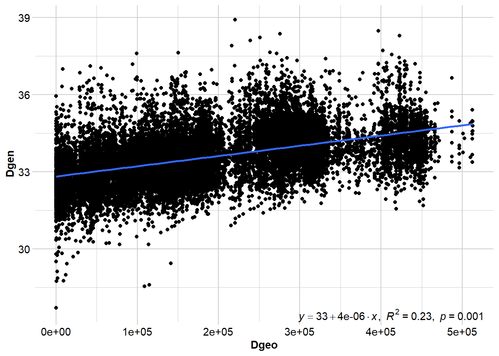
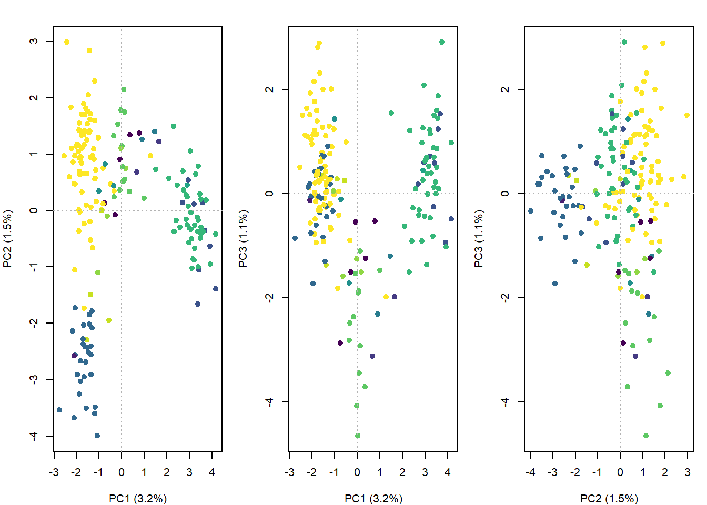
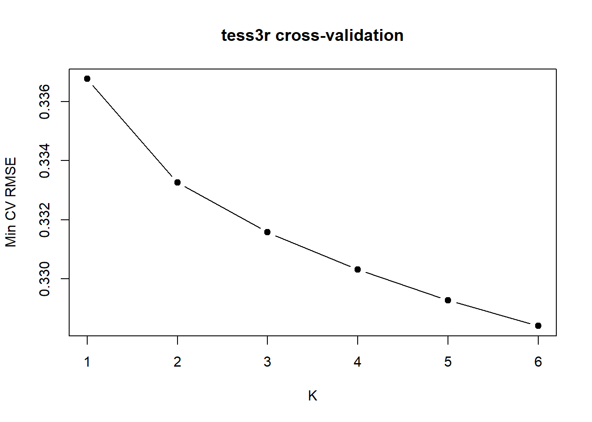
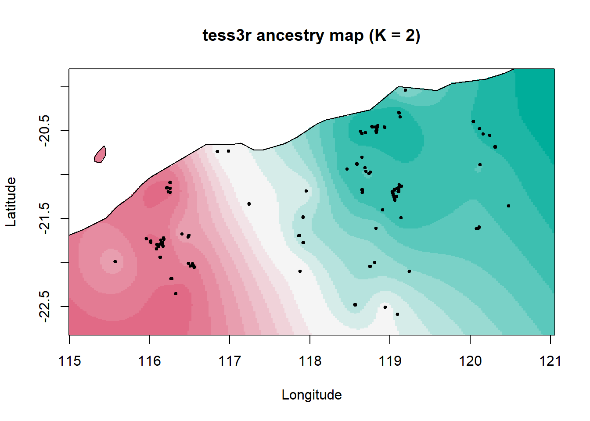
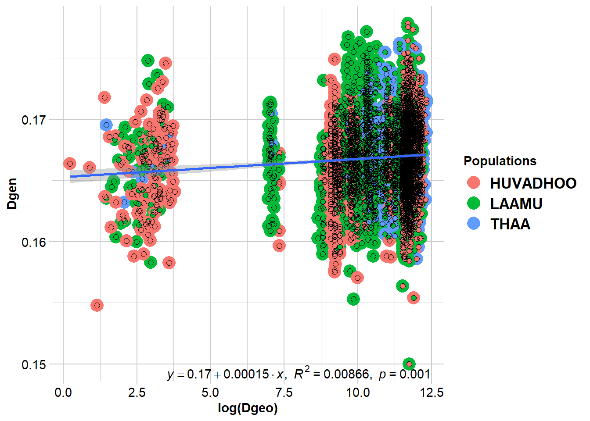
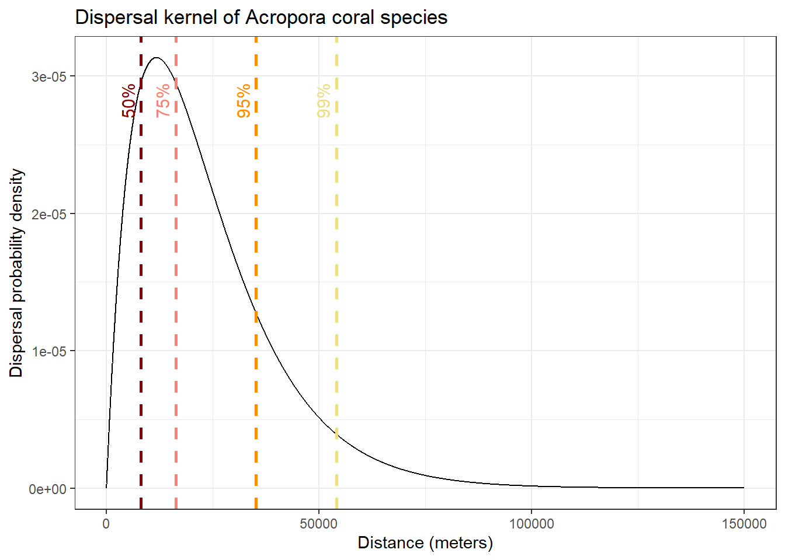
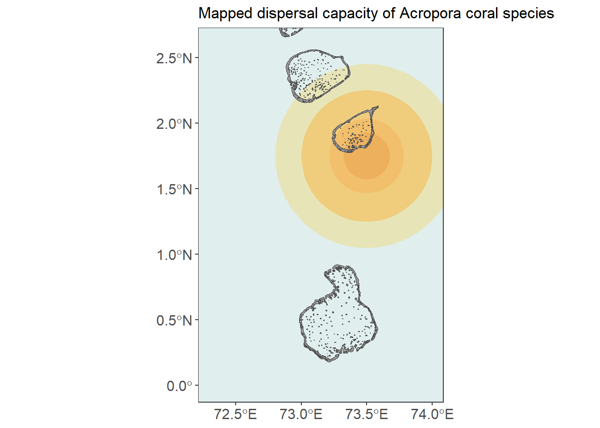

library(dartRverse)
library(tess3r)
library(raster)
library(gdistance)
library(sf)
library(leaflet)
library(viridis)
library(lme4)
library(vcfR)
library(ggplot2)
library(dplyr)
library(geosphere)
library(rworldmap)W11 Landscape Genetics
W11 Landscape genetics

Introduction
Genetic structure across landscapes/seascapes can arise from multiple mechanisms. In this tutorial, we’ll walk through the three dispersal-driven hypotheses of landscape genetics:
IBD – Isolation by Distance
- dispersal is spatially limited.
IBB – Isolation by Barrier
- dispersal is restricted by barriers.
IBR – Isolation by Resistance
- dispersal is influenced by landscape/seascape heterogeneity/permeability.
What you’ll do in this tutorial:
Run IBD tests (population-based and individual-based)
Use PCoA to visualise structure
Run TESS3 to explore IBB, and estimate ancestry coefficients with spatial information
Compute commute distance from a resistance surface and test IBR using MLPE
Estimate generational dispersal distances and build a dispersal kernel
Learning outcomes
The goal of this tutorial is to:
Understand each of these hypotheses
Compare their explanatory power
Interpret results in an ecological context
Workflow
Session structure:
Introduce the first worked example (Northern quoll – Pilbara)
Visualise sampling locations
Test IBD
Explore structure with PCoA
Test clustering using TESS3 (IBB)
Test landscape resistance using MLPE (IBR)
Compare hypotheses using model selection
Introduce the second worked example (corals – Maldives)
Estimate mean σ, the axial distance between parent and offspring
Estimate effective neighborhood size
Build dispersal kernel and visualise dispersal probability in space
Worked example 1
This example is based on the Northern quoll in the Pilbara (Western Australia). The full study can be found here: Shaw et al. 2023: https://doi.org/10.1111/cobi.13989

What is landscape genetics?
Landscape genetics asks: What processes shape spatial genetic structure?
In the Pilbara, northern quoll dispersal is relatively high and there are no obvious landscape barriers. However, environmental heterogeneity may influence connectivity. In this worked example, we will test this explicitly.
Setup
Packages used in this tutorial:
# load the data
# Note: this data set has been subsampled to reduce computation time
Quolls.gl <- readRDS("data/Quolls.gl.rds")Step 1: Define populations and visualise sampling locations
Before we do any modelling, it’s worth getting a feel for the sampling design. Where are the samples? Are there obvious gaps? Are some areas heavily sampled and others sparse? This matters because spatial analyses can be very sensitive to uneven sampling.
# Prepare the data for mapping
pts_df <- data.frame(
ind = indNames(Quolls.gl),
lon = Quolls.gl@other$latlong$lon,
lat = Quolls.gl@other$latlong$lat,
pop = pop(Quolls.gl),
stringsAsFactors = FALSE
)
# Make sure colour pallette is stable so that the same population
# always has the same colour
pop_levels <- sort(unique(as.character(pts_df$pop)))
pts_df$pop <- factor(pts_df$pop, levels = pop_levels)
cols <- viridis(length(pop_levels))
names(cols) <- pop_levels
# Visualise sampling distribution across the Pilbara using the
# leaflet package, for interactive maps
pal <- colorFactor(palette = cols, domain = pop_levels)
leaflet(pts_df) |>
addTiles() |>
addCircleMarkers(
lng = ~lon, lat = ~lat,
radius = 5,
stroke = TRUE, weight = 1, color = "black",
fillColor = ~pal(pop), fillOpacity = 0.85,
popup = ~paste0("<b>", ind, "</b><br>Pop: ", pop)
) |>
addLegend(
position = "bottomright",
pal = pal,
values = ~pop,
title = "Population (Buffer_20km)",
opacity = 1
)
What is a population?
In many continuous systems there aren’t obvious “populations”. However, it can still be useful to create artificial groupings for initial data exploration and visualisation.
In this dataset, we’re using a 20 km buffer around samples to group nearby locations as a simple “population”.
Step 2: Test Isolation by Distance (IBD)
First, let’s test the most basic hypothesis: does genetic distance increase with geographic distance?
We’ll do this two ways. The population-based test uses Fst among groups (so it’s asking whether groups that are farther apart are more differentiated).
gl_ibd1 <- gl.ibd(Quolls.gl, distance="Fst", coordinates= 'xy')
# Show Mantel statistics
gl_ibd1$mantel
Mantel statistic based on Pearson's product-moment correlation
Call:
vegan::mantel(xdis = Dgen, ydis = Dgeo, permutations = permutations, na.rm = TRUE)
Mantel statistic r: 0.773
Significance: 0.001
Upper quantiles of permutations (null model):
90% 95% 97.5% 99%
0.137 0.184 0.242 0.284
Permutation: free
Number of permutations: 999
Populations vs. individuals
IBD tests often use pairwise population metrics like FST. This is useful when there are lots of samples and populations are well defined. However, there are often situations where we don’t have multiple samples per location, populations are difficult to define and/or individuals are more continuously distributed. In this case, we can use the individual as the unit of analysis.
Where FST estimates represent evolutionary averages, pairwise individual genetic distances may represent more contemporary patterns of dispersal. Therefore, the approach you take depends on the species, your sampling, and the question you want to ask.
One caveat is that population-based IBD tests can exaggerate spatial patterns when populations are artificially defined in a continuous landscape. If individuals are grouped into sites that do not represent true biological populations, allele frequency differences among groups can arise simply through spatial autocorrelation. This can inflate FST and produce an apparently strong IBD signal.
For species like northern quolls in the Pilbara, where dispersal is relatively high and populations may be continuous, it is therefore useful to also examine individual-based IBD.
gl_ibd2 <- gl.ibd(Quolls.gl, distance="euclidean", coordinates= 'xy')
# Show Mantel statistics
gl_ibd2$mantel
Mantel statistic based on Pearson's product-moment correlation
Call:
vegan::mantel(xdis = Dgen, ydis = Dgeo, permutations = permutations, na.rm = TRUE)
Mantel statistic r: 0.4791
Significance: 0.001
Upper quantiles of permutations (null model):
90% 95% 97.5% 99%
0.0317 0.0412 0.0506 0.0592
Permutation: free
Number of permutations: 999
Mantel test statistics
Although a regression line is useful for visualising the relationship between geographic and genetic distance, we don’t report the results of the regression. Instead, we report the Mantel test statistic (and the p-value), which is the correlation between the two distance matrices. Values that approach -1 indicate a strong negative relationship, values close to 0 suggest there is no relationship, and values approaching +1 indicate a strong positive relationship (i.e., IBD).
When you interpret this, it helps to keep two ideas in mind. First, significance is not the same as a “strong” relationship. With enough data, even a weak relationship can be statistically significant. Second, outliers can be informative - they’re often your first clue that something beyond pure distance is shaping connectivity.
Do the results suggest that dispersal is spatially limited?
Both analyses detect a significant pattern of isolation by distance. However, the strength of the relationship differs depending on the unit of analysis. The population-based test shows a stronger correlation, while the individual-based analysis is more moderate. This difference is common in continuous systems because grouping individuals into populations can amplify allele-frequency differences and inflate the apparent strength of IBD. The individual-based result therefore likely provides a more realistic picture of dispersal across the Pilbara.
Overall, the results suggest that dispersal is spatially limited, but not strongly restricted. Northern quolls appear capable of moving substantial distances, and the presence of outliers suggests that factors beyond geographic distance may also influence connectivity.
Step 3: Visualise population genetic structure with PCoA
IBD tells us whether genetic distance increases with geographic distance, but it doesn’t tell us whether there are genetic clusters indicative of discrete populations and/or potential barriers reducing gene flow among clusters. PCoA is a fast, visual first pass for this: strong structure usually shows up as distinct groupings, while weak or clinal structure looks more like a gradient with lots of overlap. It’s typically the first step in exploring population genetic structure.
# Run PCoA
pc <- gl.pcoa(Quolls.gl, nf = 5)eig <- pc$eig
eig_pct <- round(100 * eig / sum(eig), 1)
scores <- as.data.frame(pc$scores[, 1:3])
names(scores)[1:3] <- c("PC1", "PC2", "PC3")
scores$ind <- indNames(Quolls.gl)
scores$pop <- pop(Quolls.gl)# Plot
op <- par(mfrow = c(1, 3), mar = c(4, 4, 2, 1))
plot(scores$PC1, scores$PC2,
col = cols[as.character(scores$pop)], pch = 19,
xlab = paste0("PC1 (", eig_pct[1], "%)"),
ylab = paste0("PC2 (", eig_pct[2], "%)"))
abline(h = 0, v = 0, lty = 3, col = "grey70")
plot(scores$PC1, scores$PC3,
col = cols[as.character(scores$pop)], pch = 19,
xlab = paste0("PC1 (", eig_pct[1], "%)"),
ylab = paste0("PC3 (", eig_pct[3], "%)"))
abline(h = 0, v = 0, lty = 3, col = "grey70")
plot(scores$PC2, scores$PC3,
col = cols[as.character(scores$pop)], pch = 19,
xlab = paste0("PC2 (", eig_pct[2], "%)"),
ylab = paste0("PC3 (", eig_pct[3], "%)"))
abline(h = 0, v = 0, lty = 3, col = "grey70")
par(op)What do the PCoA patterns suggest?
Is there population genetic structure? Do different axes tell us different things? What does this imply for our landscape genetics hypotheses?
PC1 captures the main spatial genetic gradient across the Pilbara, while PC2 and PC3 reveal weaker secondary and fine-scale variation. Overall, the axes suggest subtle, continuous structure rather than clearly discrete populations.
The PCoA suggests there may not be a hard barrier to dispersal in the Pilbara. It’s still worth testing IBB given the subtle signal, but we should do it in a way that accounts for IBD.
Step 4: Test Isolation by Barrier (IBB) with TESS3
Because the structure looks subtle and spatially continuous, we can use TESS3 rather than STRUCTURE. TESS3 estimates ancestry coefficients while explicitly incorporating spatial information. In practice, it applies spatial regularisation that encourages nearby individuals to have similar ancestry unless the genetic data strongly suggest otherwise. This tends to stabilise inference when structure is weak and clinal.
We’ll do a quick run just so you can see how it works, and then we’ll load a pre-run object with more iterations/reps so the outputs are slightly more robust:
# Create a genotype matrix (also used later)
gl.matrix <- as.matrix(Quolls.gl)
# Save coordinates as an object
coord_ll <- as.matrix(Quolls.gl@other$latlong[, c("lon", "lat")])
colnames(coord_ll) <- c("lon", "lat")
# Do a quick run to see how TESS3 works
# We'll test k = 1-6, this is based on 3-4 clusters in the PCoA + 2
set.seed(1)
Kmax <- 6
tess_out <- tess3(
X = gl.matrix,
coord = coord_ll,
K = 1:Kmax,
rep = 1, # increase this for real runs (often 50-100)
method = "projected.ls",
ploidy = 2,
max.iteration = 10, # increase this for real runs (often 200-500)
mask = 0.1,
keep = "best"
)
# Here's one we ran earlier with slightly more reps and iterations
tess_out <- readRDS("data/tess_out.rds")To choose K, we look at cross-validation RMSE.
# Check cross validation figure to determine best value for K
rmse_min <- sapply(1:Kmax, function(k) min(tess_out[[k]]$rmse, na.rm = TRUE))
plot(1:Kmax, rmse_min, type = "b", pch = 19,
xlab = "K", ylab = "Min CV RMSE",
main = "tess3r cross-validation")
How do we determine the best value for K?
With strong discrete structure you often see a clear minimum. With weak or continuous structure, RMSE may keep gradually decreasing as K increases. In that case there isn’t a single “true” K, you often look for the sharpest drop (an elbow), then treat larger K as increasingly descriptive. Here the sharpest drop is at K = 2, but interpret it cautiously (especially because we can’t get K = 1).
Plot ancestry proportions:
# Choose K
K <- 2
Q <- qmatrix(tess_out, K = K)
# Order by cluster 1 ancestry
ord <- order(Q[,1], decreasing = TRUE)
Q_ord <- Q[ord, , drop = FALSE]
# Plot the ancestry proportions
barplot(
t(Q_ord),
col = hcl.colors(K, "Dark 3"),
border = NA, space = 0,
xlab = "Individuals",
ylab = "Ancestry proportion",
main = paste0("tess3r ancestry (K = ", K, ")"),
axes = FALSE
)
axis(2); box()
What does the bar chart of ancestry proportions suggest?
There’s substantial admixture.
Next we map where the ancestry signal falls across space. The interpolation is a visual summary (not a definitive spatial model), but it’s useful for describing the pattern: if there’s a gradient or split, where is it strongest, and where is the admixture zone?
interp.pal <- CreatePalette(hcl.colors(K, "Dark 3"))
plot(
Q, coord_ll,
method = "map.max",
interpol = FieldsKrigModel(10),
col = interp.pal,
main = paste0("tess3r ancestry map (K = ", K, ")"),
xlab = "Longitude", ylab = "Latitude",
resolution = c(250, 250),
cex = 0.5
)
Here we see a broad northeast–southwest split with a wide admixture zone between two ancestral populations. This could reflect historical demography rather than a contemporary barrier. For example, major drainage divides that would have been more substantial barriers under wetter climates, a pattern also seen in geckos.
Step 5: Test Isolation by Resistance (IBR)
Even without an obvious barrier, landscape heterogeneity can still shape connectivity. That’s the point of IBR: we test whether a resistance-aware distance explains genetic distances better than simple Euclidean distance.
In Shaw et al. (2023), the R package ResistanceGA was used to select and combine layers into an optimised composite resistance surface. Here, we’ll skip the optimisation (it’s slow and can be tricky to install) and instead load the final combined surface from the paper.
# Optimised combined Resistance surface (combined distance to water + silt)
comb <- raster("data/Combined.DistWater.Silt.asc")
# Get coordinates in metres
xy <- Quolls.gl@other$xy
# It's very important that the order matches - we need these to stay linked
id_order <- indNames(Quolls.gl)
rownames(xy) <- id_orderWe then compute genetic distance (our response variable), IBD-based distance, and commute distance, a resistance-based distance metric. Conceptually, it represents expected movement difficulty across the landscape while accounting for multiple possible pathways between sites.
# Pairwise distances
# Genetic distance
G <- as.matrix(dist(gl.matrix, method = "euclidean"))
rownames(G) <- colnames(G) <- id_order
# Euclidean geographic distance (baseline IBD)
E <- as.matrix(dist(xy))
rownames(E) <- colnames(E) <- id_order
# gdistance uses conductance (high = easy movement), while resistance rasters are usually resistance (high = hard movement). So we convert resistance to conductance:
eps <- 1e-6 # add a small value to avoid divide by zero errors
tr <- transition(1 / (comb + eps), transitionFunction = mean, directions = 8)
tr <- geoCorrection(tr, type = "c")
# Now we can run commute distance
CD <- as.matrix(commuteDistance(tr, xy))
rownames(CD) <- colnames(CD) <- id_orderOnce we’ve got genetic distance (G), Euclidean distance (E), and commute distance (CD), we turn them into a pairwise data frame. We then fit MLPE mixed models, which is the standard way to handle the non-independence of pairwise distances. Each individual appears in many pairwise comparisons, so we include random intercepts for both members of the pair: (1|id1) + (1|id2).
We’ll compare three models:
IBD only (genetic distance explained by Euclidean distance),
IBR only (genetic distance explained by commute distance),
and IBR + IBD (does commute distance explain something beyond straight-line distance?).
# Build pairwise dataframe (helper function)
lower_vec <- function(m) m[lower.tri(m)]
# Build pairwise data table (helper function)
pair_table <- function(ids) {
n <- length(ids)
ij <- which(lower.tri(matrix(TRUE, n, n)), arr.ind = TRUE)
data.frame(
id1 = ids[ij[, 1]],
id2 = ids[ij[, 2]],
stringsAsFactors = FALSE
)
}
# Prepare data for modelling
pairs <- pair_table(id_order)
pair_df <- data.frame(
id1 = pairs$id1,
id2 = pairs$id2,
GDis = lower_vec(G),
Edis = lower_vec(E),
CD = lower_vec(CD)
)
# Scale variables
pair_df$Edis_sc <- as.numeric(scale(pair_df$Edis))
pair_df$CD_sc <- as.numeric(scale(pair_df$CD))
# Baseline IBD
m_ibd <- lmer(GDis ~ Edis_sc + (1 | id1) + (1 | id2),
data = pair_df, REML = FALSE)
# IBR-only
m_ibr <- lmer(GDis ~ CD_sc + (1 | id1) + (1 | id2),
data = pair_df, REML = FALSE)
# IBR beyond IBD
m_ibd_ibr <- lmer(GDis ~ Edis_sc + CD_sc + (1 | id1) + (1 | id2),
data = pair_df, REML = FALSE)# Compare AIC
AIC(m_ibd, m_ibr, m_ibd_ibr) df AIC
m_ibd 5 29423.04
m_ibr 5 29284.36
m_ibd_ibr 6 29067.58# Test whether resistance explains genetic distance
# beyond simple geographic distance.
anova(m_ibd, m_ibd_ibr)Data: pair_df
Models:
m_ibd: GDis ~ Edis_sc + (1 | id1) + (1 | id2)
m_ibd_ibr: GDis ~ Edis_sc + CD_sc + (1 | id1) + (1 | id2)
npar AIC BIC logLik deviance Chisq Df Pr(>Chisq)
m_ibd 5 29423 29462 -14706 29413
m_ibd_ibr 6 29068 29114 -14528 29056 357.46 1 < 2.2e-16 ***
---
Signif. codes: 0 '***' 0.001 '**' 0.01 '*' 0.05 '.' 0.1 ' ' 1
Which hypothesis performs best in model selection? Does IBR improve fit beyond IBD?
The combined IBD + IBR model has the lowest AIC, and adding the IBR layer significantly improves the model.
In the paper, proximity to water facilitated connectivity, likely because rocky habitat and dense vegetation along watercourses and gorges provides protection from predators during dispersal. Higher resistance was associated with areas with high silt content (including alluvial, coastal, and hardpan plains). A similar mechanism is plausible elsewhere in northern Australia: for example, divergent northern quoll populations across the Carpentaria Gap (claypans that appear to limit dispersal in multiple taxa). Some low-connectivity areas also showed reduced genetic diversity, highlighting them as candidates for future restoration efforts.
In this way, even subtle patterns of genetic structure at the individual level can provide valuable insights for ecology and conservation.
Worked example 2
This second example is based on an Acropora coral species from the Maldives, and archipelago in the Indian Ocean. This dataset is currently unpublished, but we use it to follow the analytical framework presented in a published study which also investigated dispersal of corals, on the Great Barrier Reef: Meziere et al., 2025: https://doi.org/10.1126/sciadv.adt2066. This paper also outlines the importance of estimating connectivity in a conservation or restoration context.
In the first example (Northern quolls), we used IBD primarily as a diagnostic tool, to ask: Does genetic distance increase with geographic distance, and how does that compare to IBB and IBR?
In this second example, we use the same core idea - an individual-level IBD analysis - but for a different purpose. Instead of asking “Is there IBD?”, we use the IBD signal (and the slope, specifically) to ask a more applied question:
“What is the per-generation distance between an offspring and its parent (σ), and what is the typical dispersal distance in this species?”
Inferring coral dispersal distances can directly be used for reef conservation and restoration. For example, Marine Protected Areas might be created in areas that are demographically well connected (i.e., within 2σ). Managers restoring Acropora corals in the Maldives might also want to know how far larvae originating from a restoration site are likely to disperse.
In the lecture, we saw that why combining:
- the slope of the IBD relationship (b), and
- an estimate of effective population density (De)
we can estimate σ, which is the axial offspring-parent distance:
σ = √(1/(4 x De x b))
This example shows how the same IBD framework can move beyond hypothesis testing and into quantitative inference about dispersal. To do this, we transform σ into:
- A dispersal kernel (probability density over distance), and
- Mapped dispersal zones around a hypothetical restoration site.
Step 1: Prepare the data
# Load the data
metadata <- read.csv("data/Maldives_Acropora_metadata.csv", stringsAsFactors = FALSE) # metadata for population information and coordinates
Acropora_vcf <- read.vcfR("data/Maldives_Acropora_filtered.vcf") # vcf file for genomic dataScanning file to determine attributes.
File attributes:
meta lines: 25
header_line: 26
variant count: 22561
column count: 96
Meta line 25 read in.
All meta lines processed.
gt matrix initialized.
Character matrix gt created.
Character matrix gt rows: 22561
Character matrix gt cols: 96
skip: 0
nrows: 22561
row_num: 0
Processed variant 1000
Processed variant 2000
Processed variant 3000
Processed variant 4000
Processed variant 5000
Processed variant 6000
Processed variant 7000
Processed variant 8000
Processed variant 9000
Processed variant 10000
Processed variant 11000
Processed variant 12000
Processed variant 13000
Processed variant 14000
Processed variant 15000
Processed variant 16000
Processed variant 17000
Processed variant 18000
Processed variant 19000
Processed variant 20000
Processed variant 21000
Processed variant 22000
Processed variant: 22561
All variants processedmy_sf <- read_sf("data/reefextent.geojson") # base map for the sampled region# Convert vcf to genlight
Acropora_gl <- vcfR2genlight(Acropora_vcf)
# Clean sample names and match to metadata
indNames(Acropora_gl) <- sub("-.*", "", indNames(Acropora_gl))
metadata <- metadata[match(indNames(Acropora_gl), metadata$Extraction_sample_name_vcf), ]Step 2: Individual-Level Isolation by Distance
# Define populations as sampling sites
Acropora_gl@pop <- as.factor(metadata$ATOLL)
# Add latitude and longitude of sampling sites
coords <- metadata[,c("LONG_WP", "LAT_WP")] %>%
as.matrix()
colnames(coords) <- c("lon", "lat")
# Individuals from the same site share coordinates, so we jitter slightly to avoid zero distances
coords_jitter <- coords
for (site in unique(pop(Acropora_gl))) {
idx <- which(pop(Acropora_gl) == site)
if (length(idx) > 1) {
coords_jitter[idx, ] <- coords[idx, ] +
matrix(rnorm(length(idx)*2, 0, 0.0001), ncol=2)
}
}
Acropora_gl@other$latlon <- coords_jitteribd_ind <- gl.ibd(
x = Acropora_gl,
distance = "propShared", # individual-level distance
coordinates = "latlon", # jittered coordinates
Dgeo_trans = "log(Dgeo)", # log-transform geographic distances
permutations = 999,
paircols = "pop", # color pairs by population
plot.out = TRUE)Starting gl.ibd
Analysis performed on the genlight object.
Coordinates transformed to Mercator (google) projection to calculate distances in meters.
Coordinates used from: x@other$latlon (Mercator transformed)
Transformation of Dgeo: log(Dgeo)
Genetic distance: propShared
Tranformation of Dgen: Dgen
Mantel statistic based on Pearson's product-moment correlation
Call:
vegan::mantel(xdis = Dgen, ydis = Dgeo, permutations = permutations, na.rm = TRUE)
Mantel statistic r: 0.09308
Significance: 0.001
Upper quantiles of permutations (null model):
90% 95% 97.5% 99%
0.0304 0.0379 0.0444 0.0509
Permutation: free
Number of permutations: 999
Completed: gl.ibd beta <- 0.00014 # slope of the regressionIn this IBD plot, each dot is a pair of samples, and we have colored them by the two population each sample comes from.
As you can see, the gl.ibd() function directly outputs the slope of the regression. In the following step we are going to use it to estiamte dispersal distances!
Step 3: From IBD Slope to Dispersal Distance
Now that we have the regression slope (b), we need to estimate effective popualtion density (De) to calculate σ.
In a previous session, you have learnt about effective popualtion size (Ne), and to to calculate it from genomic data. In interest of time, we provide you with an estimate here, which was obtained using NeEstimator.
To estimate density, we devide this Ne estimate by the total surface area across which the samples were collected. To do this, we used the Coral Allen Atlas. You can play with the interactive map here: https://allencoralatlas.org/
Note that in this example, we use median values for each estimate. For real research, we would want to use probability distribution of each estimate, and calculate confidence intervals around each median values when reported (see Meziere et al., 2025).
Ne <- 9500 # effective population size obtained from NeEstimator
Reef_area <- 2.3e09 # reef area in m2 estimated from Coral Allen Atlas
De <- Ne / Reef_area # effective density
sigma <- sqrt(1/(4*3.14*De*beta)) # axial parent-offspring distance
neighborhood <- 4*3.14*De*sigma^2 # number of reproducing adults within a circle of radius 2*sigmaStep 4: Dispersal Kernel
σ is an axial distance, and it can be used to parametrise a dispersal kernel, which estimates dispersal probability over increasing distance. Different density distributions can be used for the dispersal kernel. For larval dispersal, different studies have found that a Laplacian distribution is accurate (see Pinsky et al., 2017; Almany et al., 2007).
# Set distances
distance <- seq(0, 150000, 10)
# Laplace kernel function
kernel <- (distance / sigma^2) * exp(-distance / sigma)
df_kernel <- data.frame(distance, kernel)
# Probability thresholds
probs <- c(0.5, 0.75, 0.95, 0.99)
colors <- c("darkred", "salmon", "darkorange", "lightgoldenrod")
# Distances corresponding to cumulative probabilities
thresholds <- -sigma * log(1 - probs)
# Plot kernel function
ggplot(df_kernel, aes(x = distance, y = kernel)) +
geom_line() +
geom_vline(xintercept = thresholds, color = colors, linetype = "dashed", size = 1) +
geom_text(data = data.frame(x = thresholds, y = max(kernel) * 0.9, label = paste0(probs*100, "%")),
aes(x = x, y = y, label = label),
color = colors, angle = 90, vjust = -0.5, size = 4) +
theme_bw(base_size = 14) +
theme_bw() +
labs(x = "Distance (meters)",
y = "Dispersal probability density",
title = "Dispersal kernel of Acropora coral species")
In this plot, we show the distances over which 50%, 75%, 95% and 99% of larval dispersal event occur. This give us a good idea of the spatial scale of contemporary connectivity!
Step 5: Map Dispersal Probabilities
For a more visual representation, we can take the probability of dispersal inferred in the previous step and draw them as circles, centered around a hypothetical restoration site.
# Get layer for sampling region
reef <- st_sfc(st_point(c(73.5, 1.75)), crs = 4326) |> st_sf(name="reef") # choose a point to be the center of the circles
reef_proj <- st_transform(reef, 32742)
# Create circles for dispersal probabilities of 50%, 75%, 95%, 99%
probs <- c(0.5, 0.75, 0.95, 0.99)
radii <- qgamma(probs, shape = 2, scale = sigma)
colors <- c("darkred", "salmon", "darkorange", "lightgoldenrod")
circles <- lapply(seq_along(radii), function(i) {
buf <- st_buffer(reef_proj, dist = radii[i])
buf$fill <- colors[i]
buf
})
circles <- do.call(rbind, circles)
circles <- st_transform(circles, 4326)
# Plot circles on a map
ggplot() +
geom_sf(data = circles, aes(fill = fill), color = NA, alpha = 0.5) +
geom_sf(data = my_sf, color="grey30", fill = "grey60") +
scale_fill_identity() +
coord_sf(xlim = c(72.3, 74), ylim = c(0, 2.6)) +
theme_bw() +
theme(panel.grid.major = element_blank(),
axis.text = element_text(size = 12),
panel.grid.minor = element_blank(),
panel.background = element_rect(fill = "azure2", colour = NA)) +
labs(title = "Mapped dispersal capacity of Acropora coral species")
This example highlights that landscape genetic tools are not just for detecting structure - they can also be used to estimate ecologically meaningful parameters when the assumptions of the underlying models are appropriate.